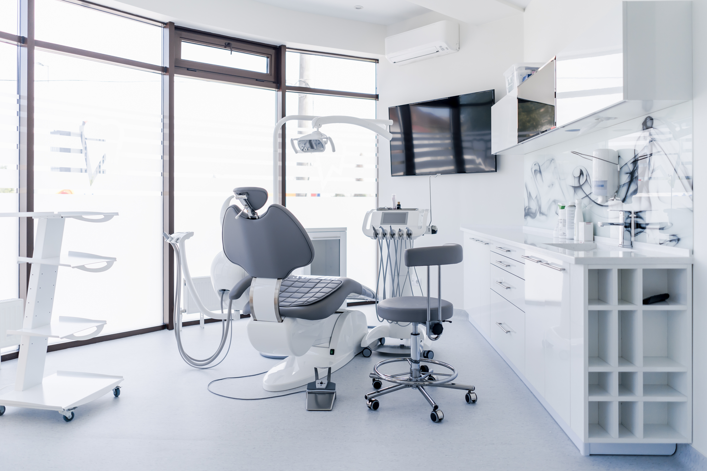

Early Detection of Health Issues: Annual Dental Check-ups provide dentists with the opportunity to detect potential health issues early on. Just as regular doctor visits are vital for humans, routine check-ups for dental health allow dentists to identify and address emerging health concerns before they escalate. Early detection often leads to more effective treatments and a higher chance of successful outcomes.
Preventive Care: Regular cleanings and check-ups are a fundamental component of the Annual Dental Check-up. These preventive measures protect you from serious, and sometimes life- threatening, dental diseases. Additionally, preventive measures such as X-rays and dental check- ups contribute significantly to your overall well-being.